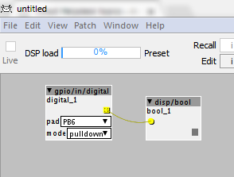

patch won't start, have tried re-flashing, have tried re-installing gui from scratch, changing the USB cable, nothing works.
everything was working fine 2 or more hours ago.
Patch is extremely basic only 2 objects.

USB device found
connected
Authentic Axoloti Core
file error: FR_DISK_ERR, filename:"/START.BIN"
Firmware version: 1.0.0.1, crc=0xE95BAC96, entrypoint=0x20011000
Generate code complete
Creating directory on sdcard : /untitled
file error: FR_DISK_ERR, filename:"/untitled"
Done creating directory
Changing working directory on sdcard : /untitled
file error: FR_DISK_ERR, filename:"/untitled"
Done changing working directory
Start compiling patch
BDIR = C:\Users\gavin\DOCUME~1\axoloti/build
FIRMWARE = .
RM
file error: FR_DISK_ERR, filename:"/untitled"
APP
file error: FR_DISK_ERR, filename:"/untitled"
file error: FR_DISK_ERR, filename:"/untitled"
! C:\Users\gavin\DOCUME~1\axoloti/build/xpatch.h.gch
internal error in mingw32_gt_pch_use_address, at config/i386/host-mingw32.c:190: MapViewOfFileEx: Attempt to access invalid address.
make: *** [C:\Users\gavin\DOCUME~1\axoloti/build/xpatch.bin] Error 1
shell task failed, exit value: 1
Compiling patch failed ( untitled )